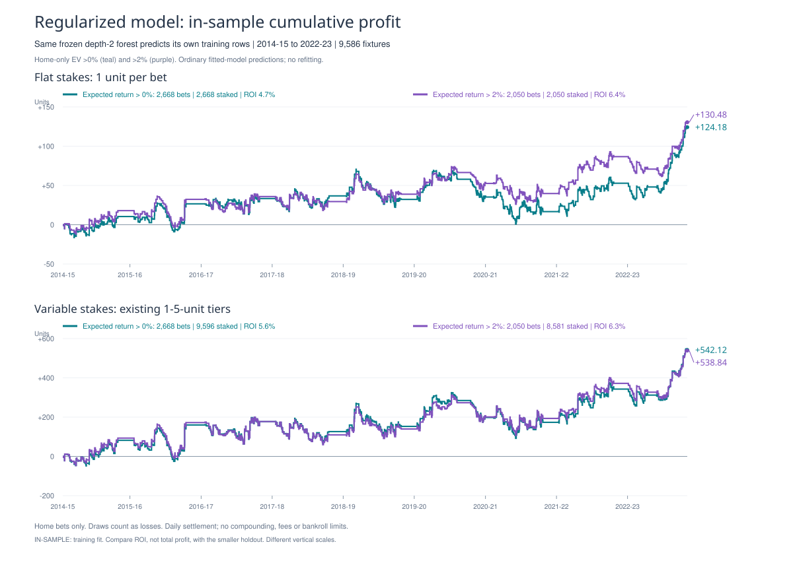
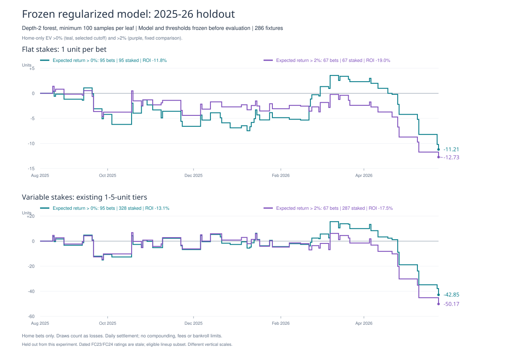
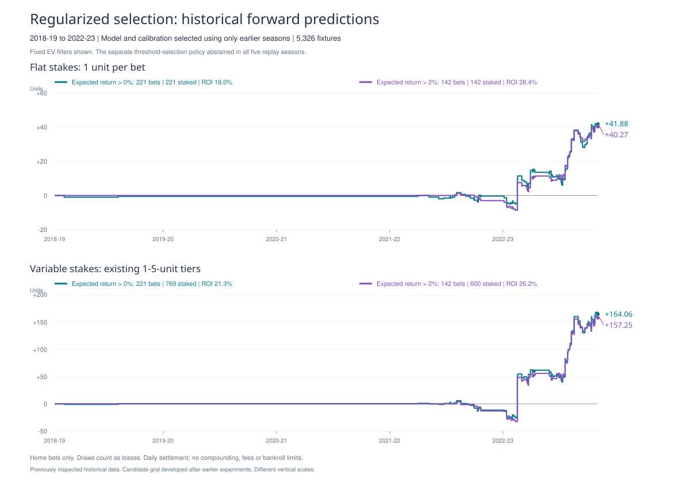

The frozen candidate did not demonstrate a betting edge on the held-out 2025-26 sample. It also had slightly worse log loss than normalized bookmaker probabilities on those same matches.
Model: rf_positions_d2_leaf100__raw. Training ended 2023-06-04 (9,586 matches). Selected home-only expected-return cutoff: 0%.
The final choice is a 500-tree forest with maximum depth 2, minimum leaf size 100, and 12 compact inputs. Team names and redundant rating transformations are omitted. Sigmoid calibration was tested using past forward predictions; the final selection favored raw probabilities.
Calibration: Sigmoid on logits; C=1. Fit on preceding two seasons of raw forward predictions (one season for 2016 initialization). Never fit on in-sample probabilities.
Selection: Minimum mean binary log loss over the previous two forward validation seasons; include raw bookmaker probabilities. Outer seasons 2018 through 2022.
Threshold: Choose among 0%, 2%, 5%, 10% using previous two seasons only. Require >=100 bets combined and positive flat net in BOTH seasons; maximize total flat net among eligible thresholds, ties favor lower cutoff. Otherwise select no betting.
History: 2014-2022 already inspected in previous experiments; historical nested replay is not untouched data.
Final: Freeze model, calibration, threshold and all preprocessing on 2014-2022 before opening 2025-26 outcomes.
Coverage: 286 of 1066 matches. 2025-26 held out from this experiment. Earlier training seasons had prior researcher exposure. FC23/FC24 ratings are stale; actual starting lineups and an eligible subset are used. Odds capture time relative to lineup announcement is not verified.


| strategy | staking | matches_train | bets_train | net_train | roi_train | matches_test | bets_test | net_test | roi_test | roi_gap_percentage_points |
|---|---|---|---|---|---|---|---|---|---|---|
| Home only: positive expected return | flat | 9586 | 2668 | 124.18000 | 0.04654 | 286 | 95 | -11.21000 | -0.11800 | 16.45442 |
| Home only: positive expected return | tiers | 9586 | 2668 | 542.12000 | 0.05649 | 286 | 95 | -42.85000 | -0.13064 | 18.71346 |
| Home only: expected return >2% | flat | 9586 | 2050 | 130.48000 | 0.06365 | 286 | 67 | -12.73000 | -0.19000 | 25.36488 |
| Home only: expected return >2% | tiers | 9586 | 2050 | 538.84000 | 0.06279 | 286 | 67 | -50.17000 | -0.17481 | 23.76029 |
Training has 9,586 matches and the holdout has 286 eligible matches; compare ROI rather than total profit. The gap reflects possible overfitting, sampling variation and changes across seasons and rating coverage. The earlier model used a shorter training period, so comparing its training ROI with this model is not a controlled estimate of the effect of regularization.
| protocol | strategy | staking | matches | bets | skips | wins | losses | win_rate | staked | net | roi | same_bets_flat_net | home_bets | away_bets | draw_losses | max_drawdown | daily_max_drawdown | expected_net | roi_lower_95 | roi_upper_95 |
|---|---|---|---|---|---|---|---|---|---|---|---|---|---|---|---|---|---|---|---|---|
| holdout_2025 | Home only: positive expected return | flat | 286 | 95 | 191 | 37 | 58 | 0.38947 | 95.00000 | -11.21000 | -0.11800 | -11.21000 | 95 | 0 | 27 | 14.77000 | 14.77000 | 11.14806 | -0.40102 | 0.14937 |
| holdout_2025 | Home only: positive expected return | tiers | 286 | 95 | 191 | 37 | 58 | 0.38947 | 328.00000 | -42.85000 | -0.13064 | -11.21000 | 95 | 0 | 27 | 58.40000 | 58.40000 | 52.64208 | -0.40232 | 0.10758 |
| holdout_2025 | Home only: expected return >2% | flat | 286 | 67 | 219 | 23 | 44 | 0.34328 | 67.00000 | -12.73000 | -0.19000 | -12.73000 | 67 | 0 | 19 | 14.13000 | 14.13000 | 10.91386 | -0.44689 | 0.05310 |
| holdout_2025 | Home only: expected return >2% | tiers | 286 | 67 | 219 | 23 | 44 | 0.34328 | 287.00000 | -50.17000 | -0.17481 | -12.73000 | 67 | 0 | 19 | 58.57000 | 56.97000 | 52.21294 | -0.44029 | 0.06756 |
| sample | model | matches | correct | accuracy | log_loss | brier | auc | home_picks | no_home_picks | home_wins | no_home_wins |
|---|---|---|---|---|---|---|---|---|---|---|---|
| same eligible matches | frozen_model | 286 | 183 | 0.63986 | 0.62660 | 0.21828 | 0.70011 | 97 | 189 | 128 | 158 |
| same eligible matches | market | 286 | 184 | 0.64336 | 0.62371 | 0.21762 | 0.70495 | 90 | 196 | 128 | 158 |
| all valid-odds matches | market | 1066 | 714 | 0.66979 | 0.59821 | 0.20603 | 0.73792 | 342 | 724 | 468 | 598 |
| league | all_matches | eligible |
|---|---|---|
| D1 | 306 | 95 |
| I1 | 380 | 108 |
| SP1 | 380 | 83 |
| model | matches | correct | accuracy | log_loss | brier | auc | home_picks | no_home_picks | home_wins | no_home_wins |
|---|---|---|---|---|---|---|---|---|---|---|
| selected | 5326 | 3560 | 0.66842 | 0.60939 | 0.21043 | 0.71957 | 1904 | 3422 | 2312 | 3014 |
| market | 5326 | 3564 | 0.66917 | 0.60892 | 0.21027 | 0.72060 | 1892 | 3434 | 2312 | 3014 |
| original_RF | 5326 | 3545 | 0.66560 | 0.61012 | 0.21079 | 0.71943 | 1973 | 3353 | 2312 | 3014 |
| period | staking | matches | bets | skips | wins | losses | win_rate | staked | net | roi | same_bets_flat_net | home_bets | away_bets | draw_losses | max_drawdown |
|---|---|---|---|---|---|---|---|---|---|---|---|---|---|---|---|
| historical_replay | flat | 5326 | 0 | 5326 | 0 | 0 | NaN | 0.00000 | 0.00000 | NaN | 0.00000 | 0 | 0 | 0 | 0.00000 |
| historical_replay | tiers | 5326 | 0 | 5326 | 0 | 0 | NaN | 0.00000 | 0.00000 | NaN | 0.00000 | 0 | 0 | 0 | 0.00000 |
| holdout_2025 | flat | 286 | 95 | 191 | 37 | 58 | 0.38947 | 95.00000 | -11.21000 | -0.11800 | -11.21000 | 95 | 0 | 27 | 14.77000 |
| holdout_2025 | tiers | 286 | 95 | 191 | 37 | 58 | 0.38947 | 328.00000 | -42.85000 | -0.13064 | -11.21000 | 95 | 0 | 27 | 58.40000 |
| protocol | strategy | staking | matches | bets | skips | wins | losses | win_rate | staked | net | roi | same_bets_flat_net | home_bets | away_bets | draw_losses | max_drawdown | daily_max_drawdown | expected_net |
|---|---|---|---|---|---|---|---|---|---|---|---|---|---|---|---|---|---|---|
| selected | Home only: positive expected return | flat | 5326 | 221 | 5105 | 120 | 101 | 0.54299 | 221.00000 | 41.88000 | 0.18950 | 41.88000 | 221 | 0 | 52 | 10.54000 | 10.16000 | 17.31390 |
| selected | Home only: positive expected return | tiers | 5326 | 221 | 5105 | 120 | 101 | 0.54299 | 769.00000 | 164.06000 | 0.21334 | 41.88000 | 221 | 0 | 52 | 35.52000 | 32.32000 | 77.65555 |
| selected | Home only: expected return >2% | flat | 5326 | 142 | 5184 | 74 | 68 | 0.52113 | 142.00000 | 40.27000 | 0.28359 | 40.27000 | 142 | 0 | 30 | 10.42000 | 9.78000 | 16.54040 |
| selected | Home only: expected return >2% | tiers | 5326 | 142 | 5184 | 74 | 68 | 0.52113 | 600.00000 | 157.25000 | 0.26208 | 40.27000 | 142 | 0 | 30 | 39.02000 | 35.82000 | 75.64529 |
| original_RF | Home only: positive expected return | flat | 5326 | 1494 | 3832 | 615 | 879 | 0.41165 | 1494.00000 | -8.54000 | -0.00572 | -8.54000 | 1494 | 0 | 370 | 107.36000 | 106.51000 | 132.64186 |
| original_RF | Home only: positive expected return | tiers | 5326 | 1494 | 3832 | 615 | 879 | 0.41165 | 5230.00000 | 22.13000 | 0.00423 | -8.54000 | 1494 | 0 | 370 | 321.30000 | 316.37000 | 583.05538 |
| original_RF | Home only: expected return >2% | flat | 5326 | 1118 | 4208 | 432 | 686 | 0.38640 | 1118.00000 | 9.35000 | 0.00836 | 9.35000 | 1118 | 0 | 275 | 77.53000 | 77.53000 | 128.91752 |
| original_RF | Home only: expected return >2% | tiers | 5326 | 1118 | 4208 | 432 | 686 | 0.38640 | 4509.00000 | 47.10000 | 0.01045 | 9.35000 | 1118 | 0 | 275 | 285.23000 | 282.88000 | 574.43722 |
| market | Home only: positive expected return | flat | 5326 | 0 | 5326 | 0 | 0 | NaN | 0.00000 | 0.00000 | NaN | 0.00000 | 0 | 0 | 0 | 0.00000 | 0.00000 | 0.00000 |
| market | Home only: positive expected return | tiers | 5326 | 0 | 5326 | 0 | 0 | NaN | 0.00000 | 0.00000 | NaN | 0.00000 | 0 | 0 | 0 | 0.00000 | 0.00000 | 0.00000 |
| market | Home only: expected return >2% | flat | 5326 | 0 | 5326 | 0 | 0 | NaN | 0.00000 | 0.00000 | NaN | 0.00000 | 0 | 0 | 0 | 0.00000 | 0.00000 | 0.00000 |
| market | Home only: expected return >2% | tiers | 5326 | 0 | 5326 | 0 | 0 | NaN | 0.00000 | 0.00000 | NaN | 0.00000 | 0 | 0 | 0 | 0.00000 | 0.00000 | 0.00000 |
| protocol | strategy | staking | matches | bets | skips | wins | losses | win_rate | staked | net | roi | same_bets_flat_net | home_bets | away_bets | draw_losses | max_drawdown | daily_max_drawdown | expected_net |
|---|---|---|---|---|---|---|---|---|---|---|---|---|---|---|---|---|---|---|
| in_sample | Home only: positive expected return | flat | 9586 | 2668 | 6918 | 948 | 1720 | 0.35532 | 2668.00000 | 124.18000 | 0.04654 | 124.18000 | 2668 | 0 | 621 | 70.68000 | 69.68000 | 642.30236 |
| in_sample | Home only: positive expected return | tiers | 9586 | 2668 | 6918 | 948 | 1720 | 0.35532 | 9596.00000 | 542.12000 | 0.05649 | 124.18000 | 2668 | 0 | 621 | 237.45000 | 232.45000 | 3102.97290 |
| in_sample | Home only: expected return >2% | flat | 9586 | 2050 | 7536 | 644 | 1406 | 0.31415 | 2050.00000 | 130.48000 | 0.06365 | 130.48000 | 2050 | 0 | 465 | 48.75000 | 47.75000 | 636.13508 |
| in_sample | Home only: expected return >2% | tiers | 9586 | 2050 | 7536 | 644 | 1406 | 0.31415 | 8581.00000 | 538.84000 | 0.06279 | 130.48000 | 2050 | 0 | 465 | 209.82000 | 204.82000 | 3091.05890 |
The historical threshold-selection policy placed zero bets: none of the chosen models had a cutoff meeting the two-season profitability requirement at those five decision points. The positive fixed-filter historical results are therefore diagnostic, not the return of the adaptive threshold policy. The final holdout choice is different: the frozen raw depth-2 forest passed that requirement on 2021 and 2022, and its selected positive-EV filter was applied unchanged.

5,000 circular four-week block bootstrap samples; descriptive conditional ROI intervals, excluding fitting and selection uncertainty.
Five unit tests and the independent verification script check temporal isolation, frozen selection and inference, feature preprocessing, all saved bet settlements, and graph endpoints. The original model artifacts remain unchanged. This experiment is saved separately.